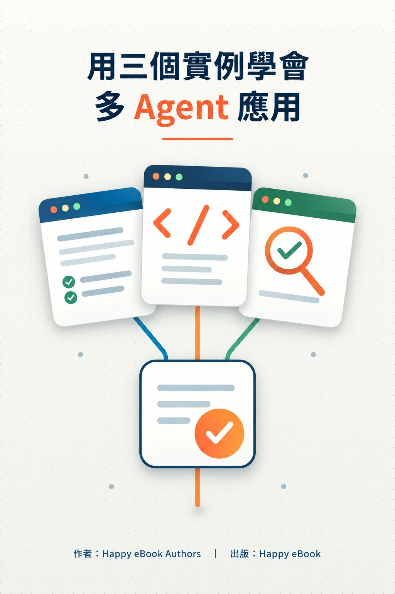

Google Play Books
用三個實例學會多 Agent 應用
從任務拆解、角色分工到交接與驗收

付費購買提供試閱版AI 學習 / AI Coding
用三個實例學會多 Agent 應用
從任務拆解、角色分工到交接與驗收
想把複雜任務交給多個 AI Agent 協作，卻不知道如何分工、交接與驗收？本書以循序漸進的方式，帶你掌握多 Agent 協作的實用方法。 全書透過三個實例，示範如何將任務拆解、分配角色、管理依賴，並檢查成果是否真的可交付： • 台南旅遊規劃：練習平行蒐集資訊，再由主 Agent 整合與標示待確認事項。 • Python 教材製作：練習依賴式接力，從課程設計、程式製作到試學驗收。 • 搜尋錯誤修復：練習重現問題、建立回歸測試、最小幅度修復與獨立審查。 你也會學到如何撰寫可重複使用的提示詞、安排跨對話交接、設定停止條件，以及用測試和證據判斷成果能否交付。書中提供操作步驟、練習與檢查清單，並說明教學示例與實際驗證的界線。 本書適合已使用過 AI 對話，想進一步學會任務分工與協作流程的讀者。內容不依賴特定 Agent 平台，也不要求使用自動調度框架；重點是建立清楚、可追溯、可驗收的工作方法。